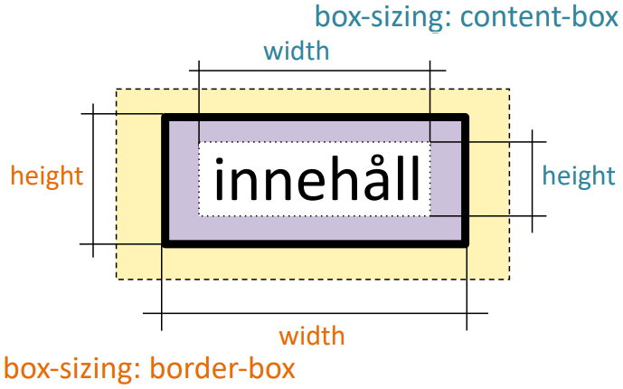

Boxmodellen
På en webbsida delas innehållet in i olika lådor som baseras på elementen i HTML-koden. Varje låda är indelad i flera delar där marginalen är längst ut, sedan kommer kanten, utfyllnad och längst in är innehållet. Lådans delar kan ändra storlek så att en kan anpassa utseendet på sidan.
Egenskaper
- width
- Hur bred lådan ska vara
- height
- Hur hög lådan ska vara
- padding
- Hur långt det ska vara mellan innehållet och kanten
- border
- Om kanten ska synas, hur tjock kanten ska vara etc.
- margin
- Hur långt det ska vara mellan lådans kant och andra lådors kant eller marginaler
box-sizing
Med css egenskapen box-sizing kan en bestämma hur width och height egenskaperna kommer att påverka ett elements låda.
Om box-sizing är satt till content-box kommer width och height ändra hur mycket utrymme innehållet får ta. Om en då ändrar storleken på utfyllnaden eller kanten kommer hela lådan ta upp mer eller mindre plats.
Om box-sizing i stället sätts till border-box kommer width och height i stället ändra kantlådans storlek. I det fallet kommer innehållet att få mindre eller mer platts när en ändrar storleken på utfyllnaden eller kanten medans hela lådan kommer att vara samma storlek om en inte ändrar marginalen.